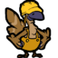

The Unified Teceti Federation
This is the approved revision of this page, as well as being the most recent.
|  | Work-In-Progress
Additional Information: "Stripes needs to revise some changes." |
| Official Name: | Risolrela Teceti Kadasolsi, The Unified Teceti Federation |
| Other Names: | Federated Nations of Teceti, UTF |
| Capital City: | Twelve Crossings (Mimisi Sidosolla, "Misol") |
| Structure: | Confederal Republic |
| Denonym(s): | Riso, Riso-Teceian |
| Founded: | -49 FCS |
- Terraforming-based Expansionists
- Pacifistic
- Environmentalist
"It was not the ancestors that survived the first death of Teceti who united us, nor was it those who saw the death of Second Teceti's innocence during the invasion of the North Teceti Coalition that unified us as a people. What formed Riso-Teceti was the children of those generations, who were made to promise that these calamities must never be repeated. Riso-Teceti will outgrow the shadow of the past, or it will wilt and die in that cold darkness it was born in."
— Passage from The Kepori and The Passage Of Guilt. (425 FCS)
Teceian Global Culture Archives, Twelve Crossings, Teceti.
The Unified Teceti Federation, referred to in shorthand as Riso-Teceti, is the combined governing body that formed out of the Northern Teceti Coalition and Southern Teceti Combine. It presides over the entirety of Teceti as a planet and a majority of its interstellar territories outside of the Reki System, save for Teceti's own ring system, which is governed independently by the Outer-Teceti Colonial Union. The planet is divided into multiple provinces that have preserved the original map of pre-unification Teceti, with each province still having a relatively small level of self-governance. The UTF and its provincial bodies maintain a strong interest in improving the conditions of their lives while maintaining an equally strong environmentalist approach to planetary handling. Somewhat similar to the Solar Confederation in its interest of maintaining neutrality, it has almost unilaterally disarmed themselves save for a self-defense force that defends Teceti, its territories elsewhere, and no further. The UTF maintains multiple ties to the other members of the interstellar community, and its position as the current leading nation in harnessing terraformation and agriculture has cemented its place as a valuable member of galactic harmony.
Structure
Riso-Teceti is the overarching government over the entirety of terrestrial Teceti, having been enacted to formally unify both north and south. While the original plan involved The Ring's own entry into the federation, the union of colonies formally denied the offer on peaceful terms, but cooperates with them as an independent ally to this day. Both the North Teceti Coalition and South Teceti Combine cooperate and work together formally under Riso-Teceti, coordinates support and humanitarian efforts, and regularly convene on matters regarding global and interstellar politics.
The Outer-Teceti Colonial Union
The Outer-Teceti Colonial Union consists of The Ring and multiple asteroid-based colonies around Teceti's planetary orbit, numbering in the dozens. The O-TCU operates on the same basis of meritocratic-oligarchy from its inception; every colony is led a group of equally-ranked leaders of their departments - from a group of knowledgeable station technicians to those managing the public-facing aspects and recreations of the colony members. These groups of departmental leaders are referred to as a panel, with all of the panels of the colony being a council. In lieu of a captain or governor position, however, communal decisions are handled by a vote of each department's panel. Each council also reports directly to Larisafa, The Ring installation's formal name and capital, for decisions regarding the entirety of the O-TCU.
Northern Teceti Coalition
In the northern polar region of Teceti is the Northern Teceti Coalition - a large group of various settlements that aligned themselves to the original agreement of communal support. Though the temporary basis of the coalition has long been moot, it enjoys a new position as the global breadbasket. However, majorly contributing to Teceti's export of food develops a constant need for members to improve their ability to feed the nations, supply the market outside, all while preserving their agrarian-socialist and staunch environmentalist titles. For government participation, every region is allotted a total of three representatives to attend the NTC's national assembly, and every representative is chosen by a vote by their home region. Beyond the national assembly, multiple executive, social, and managerial branches of the NTC work to keep its many programs functioning. As a result, the NTC maintains a majority of the state’s farms, their production, and the practice of environmental stewardship within them. All citizens benefit from the government's social welfare (notably the Basic Universal Necessities program) and robust public amenities, notably connecting most settlements through a network of trains, buses, and high-speed rail between population centers.
Southern Teceti Combine
On the opposing geographical end of the NTC is the Southern Teceti Combine - which are a coordinated group of city-states and their inter-city territories, or demesnes. The STC is the cultural and technological center of the planet, and proudly refers to itself as a technocratic society. It is headed by political scientists and specific topic boards, the latter staffed by members of matching professions. The STC's governing is handled as more of a set of ongoing problems (with solutions to effect), instead of by debate and legislation. Each city is loosely involved to others within the Combine for the purposes of trade. Larger scale resolution among settlements is handled through communication between equal or similar boards. While this results in a level of separation from the average citizen and the government they live under, both natives and foreigners are convinced by a perceived level of efficiency compared to other governing systems.
Unified Teceti Federation
Representing both north and south, the United Teceti Federation is a supranational federal union that oversees the entirety of the planet. The UTF's responsibilities include coordinating both nations for the purposes of trade, military management, and handling of popular elections. Every citizen (including citizens among the Outer-Teceti Colonial Union's colonies) has an obligation to vote in the electoral events that are held. They are also able to volunteer for the UTF's Teceti Self-Defense Force if they so choose. Most consider the United Teceti Federation to be relatively hands-off regarding the executive powers they have over both nations, allowing both the NTC and the STC to operate on their own terms without needing to intervene. Every foreign nation and trade entity interacts directly with the UTF for the purposes of commerce rights and logistics, as both the O-TCU and the UTF are heavily cooperative in management of interstellar trade.
History
See: Teceti. More in depth history should be placed here sometime.
Culture
Teceian society is driven primarily by their deeply social behaviors, community and social expectations, and their social packs.
Packs are large social groups consisting of an individual's family, friends, colleagues, or other members of their local community. They range between three or more individuals and can reach up to twenty or higher. With multiple packs that are often overlapping or interconnected, many Teceians are intimately involved with the lives of those around them. Most activities are modified to be more social to involve packs - cooking, cleaning, child-rearing, work, and hobbies typically end up involving the social pack in some way. While some time spent alone to either reflect or relax is respected, those who self-isolate are seen as an oddity, often receiving visitations for their well-being as if the root of their isolation comes from their health declining. With space travel requiring manned crews, most vessels with Teceian natives end up with a developing social pack that forms strong, fiercely protective bonds over the course of their time spent together. Teceians becoming spacers on their own, however, is viewed less as a career choice and more a social issue facing modern society -- the act is seen as divorcing themselves from the people around them and the culture they originated from.
Modern Teceti still lives with the same mindset that allowed both surviving population groups to overcome the turmoil of the past, but this intense drive has taken a toll on society at large. Stress from intensive labor and an internalized desire to serve for the survival of their communities are the primary reasons for constant exhaustion. Burnout and stress-induced health issues are primary topics among Teceians, with more recent phenomena resulting in some members of society completely withdrawing socially or opting to enter space to flee the perceived exacerbating conditions. Efforts for social and labor reforms gain steady support as time goes on; many Teceians believe that the desperate survival efforts of the past do not need to be kept, thinking these motions a start to a great release of old fears and generational trauma.
- Teceian culture at large still bears the scars of the planet's ecological disaster centuries ago, their environmentalism (and anxieties thereof) having shaped their society. Most transportation systems are public and robust, with personal automobiles being exceedingly rare and limited to emergency services, difficult terrain traversal, and maintenance crews. Teceian architecture is built to maintain a comfortable temperature equilibrium without relying on electricity. They're often built into the ground with extensive basements and only one or two floors above the surface.
- Going in hand with environmentalism, Teceian culture is broadly anti-conflict and refuses to participate in any armed conflicts and violence. The only existing military body within Teceti's government is a self-defense force and a defense network involving the planetary ring system's debris known as the Teceti Defense Screen. While many Teceians are willing to defend their social packs to the point of violence, it's only seen when provoked to an extreme point.
- Teceian fashion is primarily loose, colorful, and airy due to the relative heat outside of the extreme ends of the poles. Cold-weather fashion involves furs and leather, meant to keep as much heat as possible, due to the major kepori population's sensitivity to the cold. Raincoats are also a common sight, as to prevent their feathers from being waterlogged.
- Physical sports are very popular past-times, with interstellar football being an extremely successful cultural export. Historical Teceian contact sports focus more on being caught rather than actual physical grappling or simulated combat. Competitive foot racing is another example of a long-standing traditional sport.
Outer-Teceti Culture
The Outer-Teceti Colonial Union's populace believes heavily on a perceived work quota for keeping their communities and colonies functioning.
Permanent employment is seen as the norm, with most working for the colony's maintenance, for expansion as a government worker of the O-TCU, or for the multiple businesses that maintain permanent presence on the major economic port. Every colony begins the education of its populace as soon as they are cognizant enough to learn, from training their personalities to issuing multiple standardized tests that gauge their abilities and willingness to learn. Many students are as likely to enter secondary school as they are to immediately enter the workforce or technical apprenticeship upon graduation from primary education.
- Outside of work, the expected norm is to keep a hobby or secondary profession for the sake of self-improvement, though it's not formally enforced beyond peer pressure. By comparison, most terrestrial kepori perceive the colonists as both deeply driven and anxious to the point of neurosis. Social packs are smaller and noticeably more from coworkers and fellow students than from the broad community, and families are more insular in comparison. Internal ranking and promotions are considered vital to social standing, with social classes formed around each level of merit on top of the existing benefits and improved salaries.
- Notably, the O-TCU's colonies contain the largest populace of non-kepori, both in short-term visitation and permanent immigrants. Most colonies are notably multicultural because of this, with Larisafa being the best example from its interior overhaul to better fit other, taller species. Some older colonies come off as cramped and claustrophobic in comparison, while newer colonies have much more accommodating interiors.
- As Outer-Teceti manages the majority of the Teceti Self-Defense Force's naval operations, members of the TSLDF are viewed with a mix of suspicion and gratitude. Many consider the TSLDF to be an unfortunate necessity of the modern era, and suffers from an inability to interest volunteers to join their ranks.
North Teceti Culture
North Teceti takes great pride in its balancing of existing as the planetary breadbasket while simultaneously serving as natural stewards of the recovering ecosystems.
The North-Teceti Coalition constantly strives to improve their ability to manage the environment, with communal and state-owned farms establishing hydroponics projects to support what the land cannot provide by itself. Most northerners work for the production of crops and their refinement into goods, in turn feeding their own communities as much as they do export it elsewhere. Population centers outside of smaller communities do exist, operating as the few condensed centers for industry and government necessities.
- Most Teceians outside of the NTC view them as rustic and oriented towards their families and tightknit communities, with some less charitably considering them stubborn and back-country. Nearly every region defined within the NTC has a regional cultural identity, having been well-preserved since the original settling of the poles. Despite the perception of being a peaceful countryside, intensive labor is what defines most northerners' lives. Despite having found methods of working around more environmentally-destructive methods of agriculture and industry, the constant need to work makes their pride (and stress) from hard work not too dissimilar from the Outer-Teceti colonies.
- North Teceti's social programs and transportation networks are cited as the main sources of interest from migrants living in North Teceti. Under the NTC, a guaranteed universal income, food, clothing, and housing are provided for. Those benefiting from these are accepted without probing for their ability to reestablish themselves, and disabled citizens are guaranteed these benefits for life.
- Despite formal unification, many citizens of the NTC still identify primarily as northerners or with their particular region than as members of the UTF. While this typically does not cause political friction, lingering resentment from the initial invasion of North Teceti still exists to this day.
South Teceti Culture
The cityscapes of the South Teceti Combine foster a constant rivalry between its citizens, who hope one day to join the boards that run the cities they live in.
Life in the cities is faster-paced than anywhere else on Teceti, having grown rapidly since their opening to interstellar businesses and the greater acceptance of cutting-edge technology. Southerners consider themselves as living in the modern era, with the latest in culture and development of the future of the planet, being the primary developers of terraforming technology. Both the NTC and O-TCU's citizens perceive South Teceti as cut-throat and turbulent, with those unfortunate enough to fall behind to be left without support. Communally, friendly rivalries dominate most development in what are referred to as social packs, their members forming larger and looser relationships between each other. They join and leave these friendships very freely, with families or lasting intimacy being considered less important than the connections made.
- More modern developments such as cybernetics and artificial intelligence are well-accepted, with citizens beginning to interact with AIs acting as public helpers. Some even permit the intelligences to experiment within executive positions. Outside of the cities themselves, the members of the technocratic government boards maintain a public presence as both governing members and as personalities, specifically with their associated groups to ensure their seats are secured.
- While a vast majority of the metropoli are heavily incentivized to be environmentally neutral or friendly, an undeniable amount of pressure has been placed upon them by both the UTF and NTC for their expansive cityscapes, resulting in the intense usage of land and building materials. Debates are still ongoing if a city past a certain scale can still have a minimized impact on the environment, regardless of if there are dedicated green sections or deployment of technological advancements to minimize carbon tonnage and lessen the heat spots formed by large sections of paved land.
- Multiple concerns regarding the heavy courting of corporations, Teceian and foreign alike, have been raised regarding the rise in backroom and organized crime in STC settlements. While the UTF and STC agree on combating this, there are just as many claims that the use of shell accounts and amicable banking agreements may be purposefully slowing such efforts.
Relations
- Nanotrasen, initially found as an extremely lucrative chance to display Teceti's expertise in terraforming from the Green Belt project, is currently seen with intense suspicion post-ICW. While efforts to repair the destroyed planets and waste worlds developed from the conflict are in-progress, many terraforming companies have the corporation blacklisted, and the chance for relations to improve are unlikely in the foreseeable future.
- The Syndicate as a whole maintains a guarded handling of diplomacy between their multiple members, held to the same arm's length as Nanotrasen due to the events of the ICW.
- Cybersun and Donk! maintain a lighter reputation in South Teceti, with business being maintained despite the UTF's position of disavowing both corporations.
- The New Gorlex Republic is tentatively kept on watch by Teceian humanitarian efforts and the terraforming companies, keeping a wary eye on the developing nation as they eke out on the Frontier. While interest in supporting them has been raised in the past, they are unwilling to risk upsetting both Geneza and the NGR with any official statements on the matter.
- Zohil's initial relationship with Teceti was extremely friendly and cooperative, being the first alien entity to ever make contact with kepori in their history. A sudden loss of all contact occurred briefly during the revolution overthrowing Zohil, and the current Kalixcis political environment is carefully navigated.
- The Pan-Geneza Federation is kept distant due to their position as a belligerent party during the Bezuts Systemary War, though not to the point of refusing interactions.
- Modern Zohil is seen as a lost cause due to their isolationist policy, despite multiple efforts to reestablish regular contact with them.
- Zale, after their fall from being a large-scale empire, is kept on watch due to their precarious future as a collapsed empire. While their past actions and adherence to a monarchy alienates most of Teceti, their current state has the nation on a list for potentially needing aid.
- The Antecannal League is currently the most friendly connection between Teceti and Kalixcis, having originally been an ally of Zohil and welcoming trade and diplomacy.
- The CLIP remains extremely obscure to most of Teceian society, in spite of having a proper embassy and official cooperation between colonization efforts and the terraforming companies' involvement in undoing the damage dealt to some planets after the ICW.
- Teceti maintains a cordially neutral relationship with SolGov, despite multiple attempts to initiate friendlier positions. Despite Solarian interest in terraforming, no official interest in working with the Terraformer's Union has ever been announced or recognized.
Playing a member of this faction
- Members of the Terraformer's Union (or the myriad terraforming companies) are officially backed by the UTF and other factions. While this guarantees their ability to function in the Frontier, their backing also means they are de-facto diplomatic outreach and ambassadors on their behalf.
- With this in mind, the Terraformer's Union must maintain a high level of vigilance and professionalism as they work with the CLIP and independent groups on the Frontier, and must equally act with tentative neutrality towards members of the Syndicate and Nanotrasen alike. The New Gorlex Republic cannot be officially supported beyond an allowed level of friendliness that is considered standard operation for diplomatic reasons regarding PGF presence in the sector.
- Official members of the United Teceti Federation are primarily ambassadors, humanitarian efforts, or on the behalf of either the NTC or STC. As a representative, you must exercise conflict resolution and a consistent amount of diplomatic friendliness for the duration of your stay in the sector. Any violent conflict must be met with nonlethal returned force, and lethal force must only be used as a last resort for self-defense of yourself, your fellow members, and your vessel.